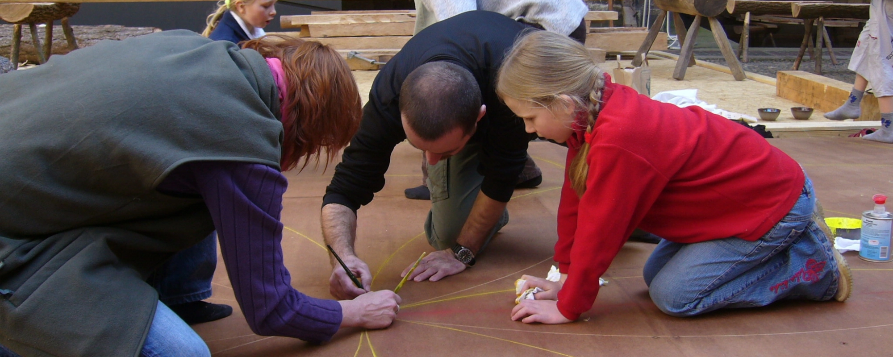

Spolupracovníci
Tuto práci bychom nedokázali bez našich spolupracovníků:
Spolupracovníci
- Pavel Hlavenka – fotogrammetrie
- Bohuslava Kunftová (R.I.P.) – fotogrammetrie
- Jiří Vidman – fotogrammetrie
Brigádníci
- Darja Gáborová
- Šárka Menoušková
- Kristýna Sobolová
- Tomáš Řáda
- Eva Štefanová
- Petr Turczer
- Lukáš Zifčák
- Eliška Zikmundová
Spolupracující firmy
- Geodetická kancelář Nedoma & Řezník
- Geodis Praha (R.I.P.)
- GeoNet Praha
- GSG Praha
- Zeměměřická kancelář Ing. Pavel Láznička
Obzvláštní radost nám dělala spolupráce s Mistrem Petrem Růžičkou (R.I.P.)
Fotografie: konstrukce klecového jeřábu poháněným poběžnými koly podle
iluminace v
Bibli Václava IV.